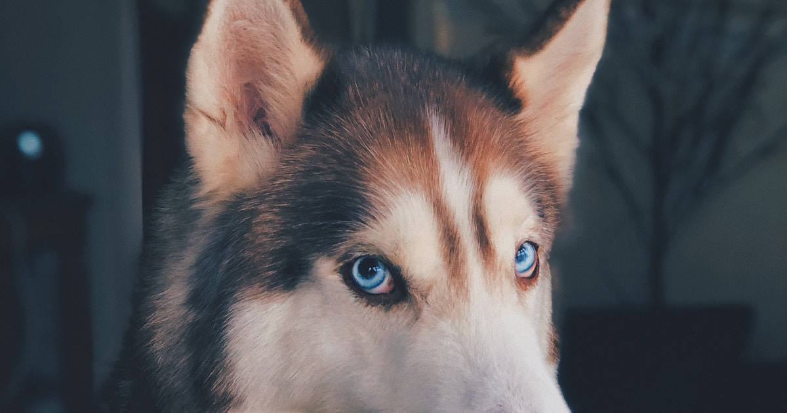

5 Signs a Dog Needs Space (and How to Respond)

Not every dog wants to say hello. Some are nervous, reactive, recovering from trauma, or simply having an off day. As dog owners, the kindest thing we can do is learn to read the signs and give other dogs the space they need. The Blue Cross has excellent resources on understanding canine body language, and learning these signals can prevent stress, confrontation, and even bites.
Whether you're walking in a busy park or passing another dog on a narrow pavement, understanding canine body language can prevent stress, confrontation, and even bites. Here are the five key signals to watch for.
1. Lip licking and yawning (when they're not tired or hungry)
Dogs lick their lips and yawn as a self-soothing behaviour when they feel uncomfortable. If you see a dog doing this as you approach, they're telling you they're not at ease. It's subtle, but it's one of the earliest stress signals a dog will show.
What to do: Redirect your dog's attention and give them a wide berth. Don't force an interaction.
2. Whale eye (showing the whites of their eyes)
"Whale eye" is when a dog turns their head away but keeps their eyes fixed on something, showing a crescent of white around the iris. It means the dog is feeling threatened or anxious and is monitoring a perceived danger.
What to do: Avoid direct eye contact with the dog. Move your dog to the other side and create distance calmly.
3. Stiff body and raised hackles
A dog that suddenly goes rigid, with muscles tensed and the fur along their spine raised (piloerection), is in a heightened state of arousal. This isn't always aggression — it can be fear, excitement, or overstimulation — but it means the dog is not in a state to socialise safely.
What to do: Stop your approach immediately. Give the dog and their owner plenty of room to pass. If you're on a narrow path, step to the side and wait.
4. Tucked tail or cowering
A tail tucked firmly between the legs, lowered body posture, or attempts to hide behind their owner are clear signs of fear. A scared dog is an unpredictable dog — they may snap if they feel cornered.
What to do: Never lean over or try to "comfort" a fearful dog you don't know. The best thing you can do is move away and give them space to decompress.
5. Growling, barking, or lunging
These are the most obvious signs, but they're also the most important to respond to correctly. Growling is communication, not "bad behaviour." A dog that growls is telling you they're uncomfortable before they escalate. Punishing a growl teaches a dog to skip the warning and go straight to biting.
What to do: Calmly move your dog away. Don't shout, yank the lead, or stare at the other dog. Stay relaxed — your dog picks up on your energy.
"A growl is a gift. It's a dog's way of saying 'please stop' before they feel they have no other choice."
How Go Rocco helps
Go Rocco's temperament colour system lets dog owners share their dog's comfort level before you even get close. A dog marked as Selective (orange) or Reactive (red) is one whose owner is asking you to give them space — no judgement, no awkwardness.
You can see nearby dogs' temperaments on the live map, so you can plan your route accordingly. It's not about labelling dogs as "good" or "bad" — it's about giving every owner the tools to advocate for their dog.
See nearby dogs before you meet
Go Rocco shows you temperaments on the map so you can walk with confidence.
Download on the App StoreThe golden rule
Always ask before approaching another person's dog. Even if your dog is friendly, theirs might not be — and that's perfectly okay. The Kennel Club recommends always asking the owner before interacting with an unfamiliar dog. The best dog owners are the ones who respect boundaries, read the room, and give space when it's needed.
A little awareness goes a long way. The more we understand each other's dogs, the safer and more enjoyable walks become for everyone.